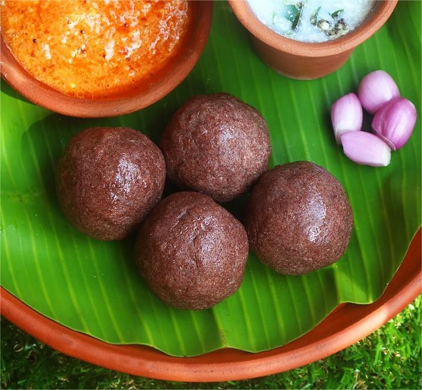
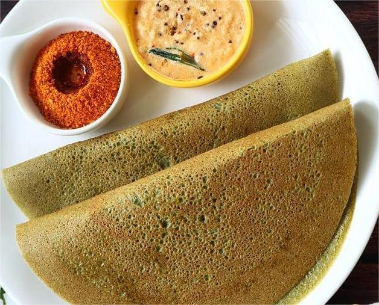
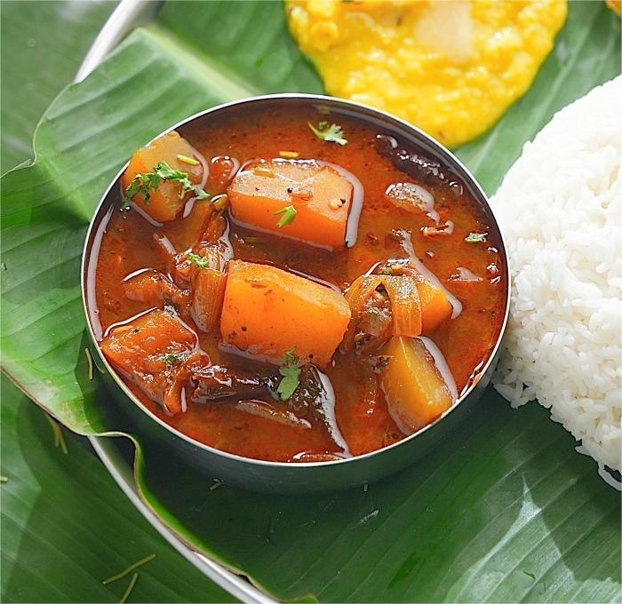
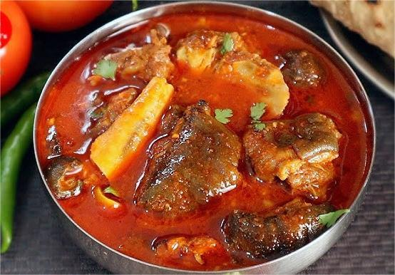
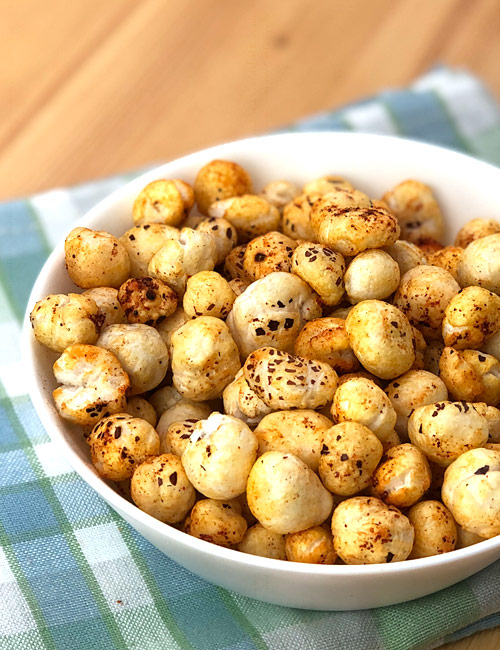

Authentic Traditional Recipes

Ragi Mudde
Traditional South Indian staple rich in nutrition.
Benefit: Strengthens bones, improves digestion, and provides long-lasting energy.
Ingredients
- Ragi flour
- Water
- Salt
Method
- Boil water with salt.
- Add ragi flour and stir continuously.
- Cook until firm.

Pesarattu
Protein-rich green gram dosa from Andhra kitchens.
Benefit: Improves metabolism and keeps you full for hours.
Ingredients
- Green gram
- Ginger
- Cumin
Method
- Grind soaked green gram.
- Prepare dosa on hot tawa.

Yerra Gummadi Pulusu
Traditional Andhra-style pumpkin tamarind curry.
Benefit: Improves digestion, boosts immunity, and balances body heat.
Ingredients
- Red pumpkin (Yerra gummadi)
- Tamarind extract
- Jaggery
- Green chilies
- Mustard seeds
- Curry leaves
- Turmeric & salt
Method
- Cook pumpkin pieces until soft.
- Add tamarind extract, jaggery, turmeric, and salt.
- Simmer until flavors blend.
- Prepare tempering and add to curry.
- Serve hot with rice.

Talakaya Kura (Goat Head Curry)
Authentic Telangana-style spicy goat head curry.
Benefit: Rich in protein and minerals, boosts strength, and is traditionally believed to improve immunity.
Ingredients
- Goat head (cleaned and cut)
- Onions (finely chopped)
- Ginger-garlic paste
- Green chilies
- Red chili powder
- Coriander powder
- Turmeric
- Garam masala
- Oil & salt
Method
- Pressure cook goat head pieces until tender.
- Sauté onions in oil until golden brown.
- Add ginger-garlic paste and spices.
- Add cooked meat and simmer until thick.
- Serve hot with rice or jowar roti.

Makhana (Grandma Style)
Old-style roasted fox nuts cooked with simple spices and love.
Benefit: Strengthens bones, supports digestion, and keeps the body light yet energetic.
Ingredients
- Makhana (fox nuts)
- Ghee
- Cumin seeds
- Black pepper
- Turmeric
- Rock salt
Method
- Dry roast makhana until crisp.
- Heat ghee and add cumin seeds.
- Add makhana, turmeric, pepper, and salt.
- Roast gently on low flame.
- Serve warm as a snack or side dish.

Sweet Pongal
Festival-special comfort food.
Benefit: Provides energy and improves mood.
Ingredients
- Rice
- Moong dal
- Jaggery
Method
- Cook rice and dal.
- Add jaggery and ghee.